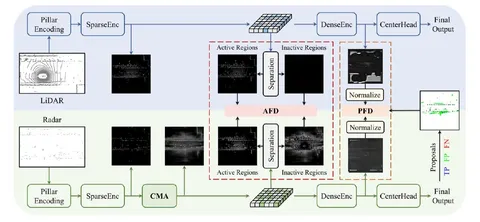

Lidar-only детекторы работают заметно лучше, чем radar-only. Причиной тому — разница в качестве данных. Лидар фиксирует более точные и многочисленные точки, в то время как радар склонен выдавать false-positive и false-negative результаты из-за переотражений и других физических тонкостей. Улучшить работу radar-only детекторов можно благодаря дистилляции.
Сегодня разберём статью о том, как получить мощный radar-only детектор с помощью lidar-only детектора. Авторы предложили несколько способов продвинутой дистилляции, учитывающих разную природу лидарных и радарных данных.
Наивная дистилляция путём матчинга фичей лидарного энкодера в фичи радарного работает плохо. Это происходит из-за особенностей радарных и лидарных данных: разной плотности точек, зашумлённости, рассинхронизации сенсоров.
Авторы предлагают три способа улучшения дистилляции:
1. Cross-Modality Alignment. Использование небольшой FPN-like сетки поверх радарной фичамапы, чтобы сделать радарные фичи такими же плотными, как лидарные.
2. Activation-based Feature Distillation. Перевзвешивание лосса в областях фичамапы с ранней стадии энкодера, где есть амплитудные лидарные фичи, помогает акцентировать внимание нейросети на релевантных областях BEV-а.
3. Proposal-based Feature Distillation. Перевзвешивание лосса в областях фичамапы с поздней стадии энкодера позволяет сфокусировать внимание нейросети на областях с GT.
Полная архитектура RadarDistill — на схеме выше. Обратите внимание, что лидары используются только на этапе обучения и не требуются для инференса.
Использование всех трёх улучшений одновременно позволяет увеличить mAP в 2 раза и NDS в 1,25 раз на nuScenes относительно radar-only from scratch.
Разбор подготовил
404 driver not found
